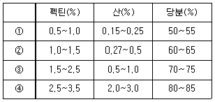

식품가공기능사 (2012-04-08 기출문제)
1과목: 식품화학
1. 단당류가 아닌 것은
- 포도당(glucose)
- 유당(lactose)
- 과당(fructose)
- 갈락토오스(galactose)
(정답률: 83%)

2. 생강의 매운맛 성분은?
- 진저론(zingerone)
- 이눌린(inulin)
- 타닌(tannin)
- 머스타드(mustard)
(정답률: 94%)
3. 어떤 식품에 외부로부터 압력을 가하면 변형이 일어나고 그 힘을 없애도 처음 상태로 되돌아가지 않는 성질은?
- 점성
- 탄성
- 소성
- 항복치
(정답률: 94%)
4. 섭취된 섬유소에 대한 설명으로 옳은 것은?
- 소화·흡수가 잘 되기 때문에 중요한 열량 급원 영양소이다.
- 장내소화효소에 의해 설사를 유발하므로 소량씩 섭취해야 하는 성분이다.
- 장의 연동작용을 유발하며 콜레스테롤과 결합하여 몸 밖으로 배출되기도 한다.
- 영양적 가치도 없고 생리적으로 아무런 필요가 없는 성분에 불과하다.
(정답률: 77%)
5. 2N 수산화나트륨 용액으로 0.1N 용액 1000mL를 만들 때 몇 mL의 2N 용액이 필요한가?
- 25mL
- 50mL
- 100mL
- 200mL
(정답률: 75%)
6. 다음 중 필수아미노산이 아닌 것은?
- 리신(lysine)
- 트립토판(tryptophan)
- 트레오닌(threonine)
- 글리신(glycine)
(정답률: 81%)
7. 다음 지질 중 복합지질에 해당하는 것은?
- 납(wax)
- 인지질
- 스테롤
- 지방산
(정답률: 78%)
8. 연체동물의 혈색소와 내포된 금속으로 옳은 것은?
- hemoglobin, Fe
- hemoglobin, Cu
- hemocyanin, Fe
- hemocyanin, Cu
(정답률: 73%)
9. 다음 영양소 중 열량소가 아닌 것은?
- 탄수화물
- 무기질
- 단백질
- 지방
(정답률: 95%)
10. 적정(titration) 시 사용된 적정 용액의 부피 변화를 측정하는 데 사용되는 실험기구는?
- 뷰렛
- 피펫
- 메스플라스크
- 메스실린더
(정답률: 78%)
11. 다음 중 지용성 비타민은?
- 비타민 C
- 비타민 A
- 비타민 B1
- 니코틴산
(정답률: 80%)
12. 다음 콜로이드 상태 중 유화액은 어디에 속 하는가?
- 분산매 기체, 분산질 액체
- 분산매 액체, 분산질 고체
- 분산매 고체, 분산질 기체
- 분산매 액체, 분산질 액체
(정답률: 72%)
13. 다음 중 단백질의 입체구조를 형성하는 데 기여하고 있지 않은 결합은?
- 수소결합
- 펩티드(peptide) 결합
- 글리코시드(glycoside) 결합
- 소수성 결합
(정답률: 55%)
14. 과실 중에 함유되어 있지 않은 색소는?
- 헤모글로빈(hemoglobin)계 색소
- 안토시안(anthocyan)계 색소
- 플라보노이드(flavonoid)계 색소
- 카로티노이드(carotenoid)계 색소
(정답률: 80%)
15. 식품 중의 단백질을 정량하는 실험은?
- 무게분석법
- 증류법
- 켈달(Kjeldahl)법
- 모아(Mohr)법
(정답률: 89%)
16. 다음 중 유화제와 가장 관계가 깊은 것은?
- HLB(hydrophlie-lipophile balance) 값
- TBA(thiobarbituric acid) 값
- BHA(butylated hydroxy anisole) 값
- BHT(butylated hydroxy toluene) 값
(정답률: 65%)
17. 다음 중 수중유적형(O/W) 유화액(emul-sion)이 아닌 것은?
- 우유
- 아이스크림
- 마요네즈
- 마가린
(정답률: 84%)
18. 다음 중 가장 노화되기 어려운 전분은?
- 옥수수 전분
- 찹쌀 전분
- 밀 전분
- 감자 전분
(정답률: 83%)
19. 오징어나 문어 등을 삶거나 구울 때 나는 독특한 맛 성분과 관련이 깊은 것은?
- 타우린
- 피페리딘
- 스카톨
- TMA
(정답률: 85%)
20. 일반적으로 유지를 구성하는 지방산의 불포화도가 낮으면 융점은 어떻게 되는가?
- 높아진다.
- 낮아진다.
- 변화가 없다.
- 높았다가 낮아진다.
(정답률: 78%)
2과목: 식품위생학
21. 곰팡이와 호기성 아포균에 효과가 있으며, 빵이나 케이크(2.5kg 이하)에 사용하는 보존료는?
- 소르브산(sorbic acid)
- 안식향산(benzoic acid)
- 프로피온산(propionic acid)
- 파라옥시안식향산메틸(methyl p-hydroxybenzoate)
(정답률: 61%)
22. 식품에서 3ppm의 납이 검출되었다는 것의 의미는?
- 식품 100g 중에 납 3g이 검출된 것
- 식품 1000g 중에 납 3g이 검출된 것
- 식품 100g 중에 납 3mg이 검출된 것
- 식품 1000g 중에 납 3mg이 검출된 것
(정답률: 72%)
23. 식품과 독성분이 바르게 연결된 것은?
- 감자-무스카린
- 복어-색시톡신
- 매실-아미그달린
- 조개-아플라톡신
(정답률: 81%)
24. 멸균 후 습기가 있어서는 안 되는 유리재질 실험기구의 멸균에 가장 적합한 방법은?
- 습열 멸균
- 건열 멸균
- 화염 멸균
- 소독제 사용
(정답률: 87%)
25. 대장균 검사 시 최확수(MPN)가 110이라면 검체 1L에 포함된 대장균 수는?
- 11
- 110
- 1,100
- 11,000
(정답률: 86%)
26. 경구감염병에 대한 일반적인 설명으로 틀린 것은?
- 미량의 미생물 균체에 의해서는 감염되지 않는다.
- 잠복기간이 길다.
- 2차 감염이 일어난다.
- 면역성이 있는 경우가 많다.
(정답률: 72%)
27. 통조림 열처리 과정 중 살아 남을 수 있는 미생물은?
- Achromobacter(아크로모박테리아)속
- Pseudomonas(슈도모나스)속
- Salmonella(살모넬라)속
- Clostridium(클로스트리듐)속
(정답률: 69%)
28. 채독증의 원인으로 피부감염이 가능한 기생충은?
- 회충
- 구충(십이지장충)
- 편충
- 요충
(정답률: 78%)
29. 대장균검사법에 반드시 첨가하여야 할 배지 성분은?
- 유당
- 과당
- 포도당
- 맥아당
(정답률: 78%)
30. 마이코톡신(mycotoxin)중 간장독을 일으키는 독성분은?
- 시트리닌(citrinin)
- 말토리진(maltoryzine)
- 파툴린(patulin)
- 아플라톡신(aflatoxin)
(정답률: 72%)
31. 사람의 작은 창자에 기생하며 돼지가 중간 숙주인 기생충은?
- 광절열두조충
- 만손열두조충
- 무구조충
- 유구조충
(정답률: 78%)
32. 제1중간숙주가 다슬기이고, 제2중간숙주가 참게, 참가재인 기생충은?
- 요충
- 분선충
- 폐디스토마
- 톡소플라스마증
(정답률: 88%)
33. 콜레라의 특징이 아닌 것은?
- 호흡기를 통하여 감염된다.
- 외래 감염병이다.
- 감염병 중 급성에 해당한다.
- 원인균은 비브리오균의 일종이다.
(정답률: 70%)
34. 식품 성분 중 주로 단백질이나 아미노산 등의 질소화합물이 세균에 의해 분해되어 저분자 물질로 변화하는 현상은?
- 노화
- 부패
- 산패
- 발효
(정답률: 82%)
35. 금속 제련소의 폐수에 다량 함유되어 중독 증상을 일으킨 오염물질은?
- 염소
- 비산동
- 카드뮴
- 유기수은
(정답률: 70%)
36. 복어를 먹었을 때 식중독이 일어났다면 무슨 독인가?
- 세균성 식중독
- 화학성 식중독
- 자연독
- 알레르기성 식중독
(정답률: 89%)
37. 통조림 중에서 가열살균 조건을 가장 완화 시켜도 되는 것은?
- 과일주스 통조림
- 어육 통조림
- 육류 통조림
- 채소류 통조림
(정답률: 73%)
38. 식품첨가물을 의도적으로 첨가하거나 농작물에 살포한 농약이 잔류한 경우 등에 의한 식중독은?
- 독소형 식중독
- 감염형 식중독
- 식물성 식중독
- 화학적 식중독
(정답률: 83%)
39. 과망간산칼륨의 소비량으로 물속의 유기물 함유량을 측정하는 지표는?
- 생물학적 산소요구량(BOD)
- 화학적 산소요구량(COD)
- 트리메틸아민(TMA)
- 휘발성염기질소(VBN)
(정답률: 63%)
40. HACCP에 의한 위해요소의 구분 및 그 종류와 예방대책의 연결이 틀린 것은?
- 생물학적 위해 : E. coli O157:H7 - 적절한 요리시간과 온도준수
- 물리적 위해 : 유리 - 이물관리
- 화학적 위해 : 농약 - 환경위생 관린 철저
- 생물학적 위해 : 쥐 - 침입 차단 등의 구서 대책 마련
(정답률: 70%)
3과목: 식품가공 및 기계
41. 어떤 통조림이 대기압 720mmHg인 곳에서 관내 압력은 350mmHg이었다. 대기압 750mmHg에서 이 통조림의 진공도는? (단, 관의 변형 등 기타 영향은 전혀 없다.)
- 350mmHg
- 370mmHg
- 380mmHg
- 400mmHg
(정답률: 66%)
42. 두부가 응고되는 현상은 주로 무엇에 의한 단백질의 변성인가?
- 촉매
- 금속이온
- 산
- 알칼리
(정답률: 68%)
43. 과일 젤리응고에 필요한 펙틴, 산, 당분 함량이 가장 적합한 것은?

- ①
- ②
- ③
- ④
(정답률: 73%)
44. 통조림 검사에서 검사 즉시 바로 판정이 되지 않고 1~2주일 후에야 판정이 가능한 검사 방법은?
- 겉모양검사
- 타관검사
- 가온검사
- 진공도검사
(정답률: 76%)
45. 젤리점(Jelly point) 판정 방법이 아닌 것은?
- 펙틴법(pectin test)
- 스푼법(spoon test)
- 컵법(cup test)
- 당도계법
(정답률: 70%)
46. 소시지나 프레스햄의 제조에 있어서 고기를 케이싱에 다져 넣어 고깃덩이로 결착시키는데 쓰이는 기계는?
- 사일런트 커터(silent cutter)
- 스터퍼(stuffer)
- 믹서(mixer)
- 초퍼(chopper)
(정답률: 61%)
47. CA 저장에서 저장고 내의 O2와 CO2의 일반적인 조성비는?
- O2 : 1 ~ 5%, CO2 : 80~90%
- O2 : 2 ~ 10%, CO2 : 1~5%
- O2 : 10 ~ 15%, CO2 : 80~90%
- O2 : 1 ~ 5%, CO2 : 2~10%
(정답률: 56%)
48. 달걀이 저장 중 무게가 감소하는 주된 이유는?
- 수분 증발
- 난백의 수양화
- 노른자 계수 감소
- 단백질의 변성
(정답률: 70%)
49. 분무세척기를 이용하여 콩이나 옥수수를 세척하기 위해 사용해야 할 적합한 컨베이어는?
- 롤러 컨베이어
- 벨트 컨베이어
- 진동 컨베이어
- 슬레이트 컨베이어
(정답률: 69%)
50. 식육 가공에서 훈연하는 이유와 거리가 먼 것은?
- 저장성을 준다.
- 색깔을 좋게 한다.
- 영양가를 높여 준다.
- 향을 좋게 한다.
(정답률: 82%)
51. 햄 제조 시 큐어링(curing)의 목적이 아닌 것은?
- 제품에 독특한 풍미 부여
- 제품의 색택 유지
- 고기의 부패 방지 및 저장성 부여
- 고기의 연화성 향상
(정답률: 63%)
52. 식품가공에서 사용하는 파이프의 방향을 90° 바꿀 때 사용되는 이음은?
- 엘보우
- 래터럴
- 크로스
- 유니온
(정답률: 82%)
53. 연제품 제조 시 탄력보강제 및 증량제로서 첨가하는 것은?
- 유기산
- 베이킹파우더
- 전분
- 설탕
(정답률: 74%)
54. 곡물 도정의 원리에 속하지 않는 것은?
- 마찰
- 마쇄
- 절삭
- 충격
(정답률: 68%)
55. 마른 오징어의 표면에 생기는 흰가루의 구수한 맛은 대부분 어떤 성분인가?
- 베타인
- 염분
- 당분
- 염기질소
(정답률: 72%)
56. 원료육의 화학적 선도 판정에 가장 많이 사용하는 것은?
- 요오드값 측정
- 대장균의 측정
- 휘발성염기질소량 측정
- BOD 측정
(정답률: 56%)
57. 다음 중 식물성 색소가 아닌 것은?
- 카로티노이드(carotenoid)
- 마이오글로빈(myoglobin)
- 안토시아닌(anthocyanin)
- 플라보노이드(flavonoid)
(정답률: 61%)
58. 통조림의 가온검사 시 패류 등에서 고온성 세균이 있을 우려가 있을 대의 가온검사 온도는?
- 25℃
- 35℃
- 45℃
- 55℃
(정답률: 62%)
59. 육류가공의 염지용 재료가 아닌 것은?
- 소금
- 설탕
- 아질산나트륨
- 레닛
(정답률: 73%)
60. 시머(밀봉기)에 의한 밀봉 과정에 대한 설명으로 틀린 것은?
- 리프터는 캔의 밑부분을 고정시킨다.
- 척은 캔의 윗부분을 고정시킨다.
- 롤은 캔의 시밍(밀봉)하는 부분이다.
- 롤은 상·하 이동을 통해 뚜껑을 고정시키는 부분이다.
(정답률: 55%)